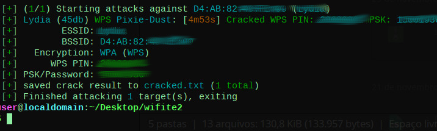

Foi identificada uma vulnerabilidade no modelo TG1692A da Claro Net que, quando configurado com WPS ativado, pode permitir que atacantes invadam a rede Wi-Fi utilizando o método conhecido como Pixie Dust.
Este ataque aproveita uma falha no WPS, tornando possível a invasão da rede sem necessidade de senha, a chave e o pin são capturados em segundos, permitindo assim conectar na rede wifi, colocando seus dados e dispositivos em risco.
Se você possui esse modelo de roteador, entre em contato com a Claro Net ou consulte o manual para realizar as configurações de segurança recomendadas acima.